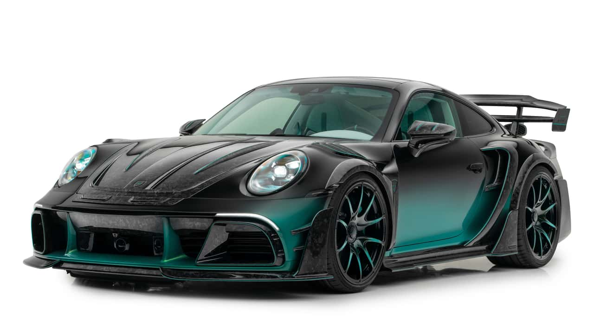

| Car Name |
|---|
| Ferrari 488 |
| Ford Mustang |
| Porsche 911 |
Ferrari 488: The Ferrari 488 is a mid-engine sports car known for its stunning design and powerful twin-turbocharged V8 engine that delivers an exhilarating driving experience. Best used for track days and weekend drives, where performance and speed are prioritized.

Ford Mustang: The Ford Mustang is an iconic American muscle car that combines retro styling with modern performance features, offering a range of powerful engines. Ideal for cruising and spirited drives, perfect for car enthusiasts who appreciate a classic muscle car experience.

Porsche 911: The Porsche 911 is a legendary sports car with a distinctive design and a rear-engine layout, known for its balance and agility on the road. Excellent for both daily driving and performance on winding roads, making it a versatile choice for sports car lovers. 